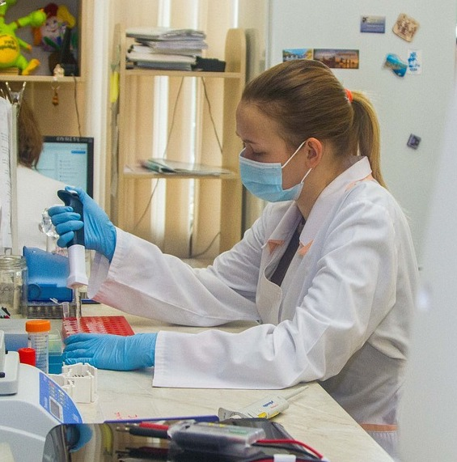

Dictionary
Bright
 Definition:
Definition:
Full of light or shining strongly.
Lleno de luz o que brilla intensamente.
Example:
That bright star in the east before sunrise is Jupiter.
Aquella estrella brillante al este antes del amanecer es Júpiter.
Spanish word:
Brillante
Audio:
Challenge

Female

Spanish word:
Mujer, hembra, femenino
Audio:
Sky
 Definition:
Definition:
The sky is the big space above us. It is blue during the day and dark at night.
El cielo es el gran espacio encima de nosotros. Es azul durante el día y oscuro por la noche.
Example:
At night, we can see stars in the sky.
Por la noche, podemos ver las estrellas en el cielo.
Spanish word:
Cielo
Audio:
Space base
 Definition:
Definition:
A space base is a place in space where astronauts live and work.
Una base espacial es un lugar en el espacio donde los astronautas viven y trabajan.
Example:
The space base is ready for the new mission.
La base espacial está lista para la nueva misión.
Spanish word:
Base espacial
Audio:
 When you look at the
When you look at the  What can you see in the sky at night?
What can you see in the sky at night? Do the stars, planets and satellites move?
Do the stars, planets and satellites move? Read the next message.
Read the next message. How the Earth and Moon move.
How the Earth and Moon move. To explain why we have day, night and season.
To explain why we have day, night and season. To work in a group.
To work in a group.
{kind=link}
{kind=link}